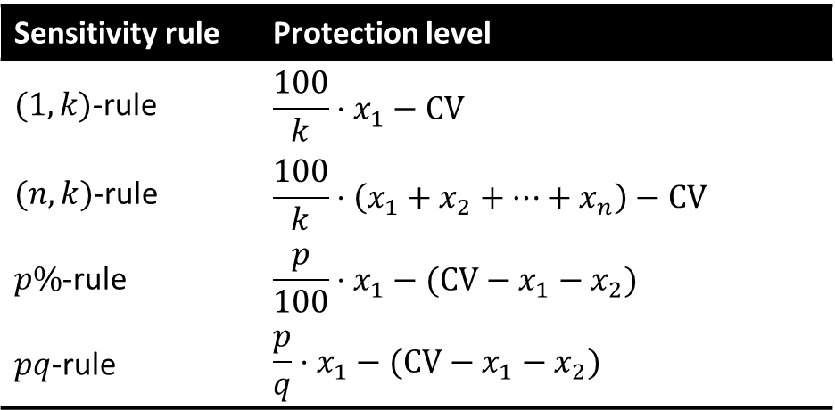
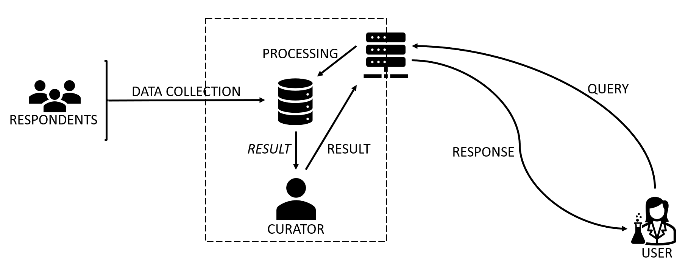
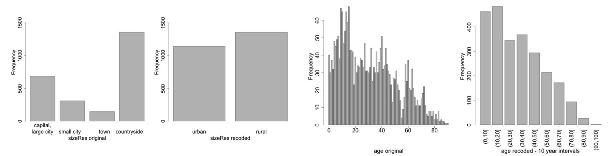

Privacy in databases#
Introduction#
In healthcare, data is often collected from patients to better understand disease patterns, improve treatments, and develop new medications. Some common types of data that are often used in biomedical research include: Demographic data: age, address, marital status, gender, etc. Social data: education, income, etc. Behavioral data: sleeping habits, smoker, drinker, drug user, etc. Clinical data: diagnostics, medications, test results, etc. Genomic data: genomic sequencing from samples. Image data: x-rays, CT-scans, MRI, fMRI, etc. Textual data: extra auxiliary information.
When processing, sharing, or releasing these data, we might do so as: Tabular data. Tables with counts or magnitudes. Queryable databases. On-line databases which accept statistical queries (sums, averages, max, min, etc.). Microdata. Files where each record contains information on an individual (a physical person or an organization).
Statistical databases must provide useful statistical information. They must also preserve the privacy of respondents if data are sensitive. Anonymization measures aim to produce modified versions of the original datasets which are as close as possible to the original datasets but do not allow attackers to identify individuals or to infer confidential attributes about specific individuals. Anonymous data are not classified as personal data and hence fall outside the scope of the GDPR.
Whichever the type and format of the data, the general aim of anonymization mechanisms is to minimize the risk of disclosure, in particular identity and/or attribute disclosure. In addition to accidental leakages, such disclosures can occur because of attacks. Record and attribute linkage attacks match auxiliary knowledge of an individual to records in private microdata sets to learn additional information about the target. Membership and attribute inference leverage released aggregate data, such as statistical tables or machine learning models, to improve their probabilistic belief in some piece of information about a target individual. Finally, reconstruction attacks try to reconstruct the original microdata (or training data in case of ML) from released statistics (or ML models).
Evaluation is in terms of two conflicting goals: Minimize the data utility loss caused by the method. Minimize the extant disclosure risk in the anonymized data. The best methods are those that optimize the trade-off between both goals. Two approaches exist to achieve this trade-off: Utility-first anonymization: apply masking methods iteratively until a desired disclosure risk is met. Privacy-first anonymization: use a privacy model, such as 𝑘-anonymity or 𝜖-differential privacy, which sets a disclosure risk, to derive parameters for masking methods.
Tabular data protection#
Goal: Publish static aggregate information, in such a way that no confidential information can be inferred on specific individuals to whom the table refers. From microdata, tabular data can be generated by crossing one or more categorical attributes. Formally, given categorical attributes \(X_1, \cdots, X_l\), a table \(T\) is a function $\(T : D(X_1) \times D(X_2) \times \cdots \times D(X_l) \rightarrow R \; or \; N\)\( where \)D(X_i)\( is the domain where attribute \)X_i$ takes its values.
Types of tables#
id |
Salary |
Sector |
Region |
|---|---|---|---|
1 |
500000€ |
IT |
BCN |
2 |
320000 € |
IT |
BCN |
3 |
32000 € |
IT |
BCN |
4 |
35000 € |
IT |
TGN |
5 |
34000 € |
IT |
TGN |
6 |
28000 € |
IT |
TGN |
7 |
300000 € |
HC |
BCN |
8 |
45000 € |
HC |
BCN |
9 |
34000 € |
HC |
BCN |
10 |
45000 € |
HC |
TGN |
11 |
34000 € |
HC |
TGN |
12 |
24000 € |
HC |
TGN |
13 |
300000 € |
Fin |
BCN |
14 |
350000 € |
Fin |
BCN |
15 |
150000 € |
Fin |
TGN |
| Frequency | Region | ||
|---|---|---|---|
| Sector | BCN | TGN | Total | IT | 3 | 3 | 6 |
| Fin | 2 | 1 | 3 |
| HC | 3 | 3 | 6 |
| Total | 8 | 7 | 15 |
| Sum of Salary | Region | ||
|---|---|---|---|
| Sector | BCN | TGN | Total | IT | 852000 € | 97000 € | 949000 € |
| Fin | 335000 € | 150000 € | 485000 € |
| HC | 379000 € | 103000 € | 482000 € |
| Total | 1566000 € | 350000 € | 1916000 € |
Disclosure attacks in tables#
External attack Let a released frequency table Ethnicity \(\times\) Town contain a single respondent for ethnicity \(E_i\) and town \(T_j\). If a magnitude table is released with the average blood pressure for each ethnicity and each town, the exact blood pressure of the only respondent with ethnicity \(𝐸_𝑖\) in town \(𝑇_𝑗\) is publicly disclosed. Internal attack If there are only two respondents for ethnicity \(𝐸_𝑖\) and town \(𝑇_𝑗\) , the blood pressure of each of them is disclosed to the other. Dominance attack If one (or few) respondents dominate in the contribution to a cell in a magnitude table, the dominant respondent(s) can upper-bound the contributions of the rest. E.g., if the table displays the cumulative earnings for each job type and town, and one individual contributes 90% of a certain cell value, they know their colleagues in the town are not doing very well.
SDC Methods for tables#
Non-perturbative. They do not modify the values in the cells, but they may suppress or recode them. Best known methods: cell suppression (CS). recoding of categorical attributes. Perturbative. They modify the values in the cells. Best known methods: controlled rounding (CR). controlled tabular adjustment (CTA).
Cell suppression#
Identify sensitive cells, using a sensitivity rule. Suppress values in sensitive cells (primary suppressions). Perform additional suppressions (secondary suppressions) to prevent recovery of primary suppressions from row and/or column marginals.
Sensitivity rules#
Minimum frequency rule: the cell frequency is less than a pre-specified minimum frequency 𝑛. (𝒏,𝒌)-dominance rule: the sum of the 𝑛 largest contributors exceeds 𝑘% of the cell total. 𝒑%-rule: the cell total minus the 2 biggest contributors is less than 𝑝% of the largest contribution. 𝒑𝒒-rule: Generalization of the 𝑝%-rule, which takes into account prior information. The 2nd biggest contributor can estimate the rest of contributions within 𝑞%.
| Sum of Salary | Region | ||
|---|---|---|---|
| Sector | BCN | TGN | Total | IT | 852000 € | 97000 € | 949000 € |
| Fin | 335000 € | 150000 € | 485000 € |
| HC | 379000 € | 103000 € | 482000 € |
| Total | 1566000 € | 350000 € | 1916000 € |
Secondary suppressions#
Usually, one attempts to minimize either the number of secondary suppressions or their marginals. Optimization methods are heuristic, based on mixed linear integer programming or networks flows (the latter for 2-D tables only).
| Sum of Salary | Region | ||
|---|---|---|---|
| Sector | BCN | TGN | Total | IT | - | 97000 € | 949000 € |
| Fin | - | - | 485000 € |
| HC | 379000 € | 103000 € | 482000 € |
| Total | 1566000 € | 350000 € | 1916000 € |
A Feasibility Interval is the range of possible values that a suppressed cell can take, given the linear relations between cells and the row and column totals. In here, \(X_{11}\) must be in range \([3,6]\), because \(𝑋_{21}+𝑋_{22}= 3 \rightarrow 𝑋_{21} \le 3\), \(𝑋_{11}+𝑋_{21}+3=9 \rightarrow 𝑋_{11} \le 6\), and \(𝑋_{11}+𝑋_{21}+3=9 \rightarrow 𝑋_{11} \ge 3\).
| Example | Attribute 1 | ||
|---|---|---|---|
| Attribute 2 | 1 | 2 | Total | 1 | X11 | X12 | 7 |
| 2 | X21 | X22 | 3 |
| 3 | 3 | 3 | 6 |
| Total | 9 | 7 | 16 |
The feasibility interval must contain the protection interval. The protection interval is computed according to the chosen sensitivity rule \([𝐶𝑉−𝑃𝐿, 𝐶𝑉+𝑃𝐿]\).

Controlled rounding and Controlled tabular adjustment#
CR rounds values in the table to multiples of a rounding base (marginals may have to be rounded as well). CTA modifies the values in the table to prevent inference of sensitive cell values within a prescribed protection interval. CTA attempts to find the closest table to the original one that protects all sensitive cells. CTA optimization is typically based on mixed linear integer programming and entails less information loss than CS.
Utility loss in tabular SDC#
For cell suppression, utility loss is measured as the number of secondary suppressions or their pooled magnitude. For controlled tabular adjustment or rounding, it is measured as the sum of distances between true and perturbed cell values. The above loss measures may be weighted by cell costs, if not all cells have the same importance.
Disclosure risk in tabular SDC#
Disclosure risk is evaluated by computing the feasibility intervals for sensitive cells (via linear programming constrained by the marginals). What could be the range of values of the suppressed cells given other cells, including marginals? The table is safe if the feasibility interval for any sensitive cell contains the protection interval defined for that cell. If a cell was suppressed because of the 𝑝%-rule, does this 𝑝% lie within the feasibility interval? The protection interval is the narrowest interval estimate of the sensitive cell permitted by the data protector.
Interactive databases#

Issues#
id |
Salary |
Sector |
Region |
|---|---|---|---|
1 |
500000€ |
IT |
BCN |
2 |
320000 € |
IT |
BCN |
3 |
32000 € |
IT |
BCN |
4 |
35000 € |
IT |
TGN |
5 |
34000 € |
IT |
TGN |
6 |
28000 € |
IT |
TGN |
7 |
300000 € |
HC |
BCN |
8 |
45000 € |
HC |
BCN |
9 |
34000 € |
HC |
BCN |
10 |
45000 € |
HC |
TGN |
11 |
34000 € |
HC |
TGN |
12 |
24000 € |
HC |
TGN |
13 |
300000 € |
Fin |
BCN |
14 |
350000 € |
Fin |
BCN |
15 |
150000 € |
Fin |
TGN |
SELECT count() FROM table WHERE Salary > 100.000
Result = 5
SELECT sum(Salary) FROM table WHERE Sector = HC
Result = 482.000
SELECT count() FROM table WHERE Sector = IT and Region = TGN
Result = 3
SELECT count() FROM table WHERE Sector = Fin and Region = TGN
Result = 1
SELECT avg(Salary) FROM table WHERE Sector = Fin and Region = TGN
Result = 150.000
Interactive database protection#
Three main SDC approaches: Query restriction. The database refuses to answer certain queries. Camouflage. Deterministically correct non-exact answers (small interval answers) are returned by the database. Query perturbation. Perturbation (noise addition) can be applied to the microdata records on which queries are computed (input perturbation) or to the query result after computing it on the original data (output perturbation).
Query restriction#
This is the right approach if the user does require deterministically correct answers and these answers must be exact (i.e., a number). Exact answers may be very disclosive, so it may be necessary to refuse answering certain queries at some stage. A common criterion to decide whether a query can be answered is query set size control: the answer to a query is refused if this query together with the previously answered ones isolates too small a set of records. Problems: computational burden to keep track of previous queries, collusion possible.
Camouflage#
Interval answers are returned rather than point answers. No distortion of answers. Unlimited answers can be returned. Each query can only concern a single confidential attribute. Privacy bounds are set for each confidential attribute. The data curator can set a global bound, e.g., 30% (𝑢_𝑖−ℓ_𝑖≥0.3𝑥_𝑖). Respondents may request specific upper and lower bounds for their values.
Query perturbation#
Add noise to the values of confidential attributes in the original microdata (input perturbation). We will cover that when we talk about microdata protection. Add noise to the results of the queries after computing them on the original data (output perturbation). Under the differential privacy model, we can give theoretical guarantees on the privacy level achieved with output perturbation.
Randomized response#
There are \(n\) people, and individual \(i\) has a sensitive bit \(X_i \in \{0,1\}\). Each person sends the analyst a message \(Y_i\), which may depend on \(X_i\) and some random numbers which the individual can generate. Based on these \(Y_i\), the analyst would like to estimate \(p=1/n \sum_i X_i\). Consider the following strategy, which we will call Randomized Response, parameterized by some \(\gamma\in [0, 1/2]\). \(Y_i = X_i\) with probability \(1/2 + \gamma\) and \(Y_i = 1-X_i\) with probability \(1/2-\gamma\). How private \(Y_i\) and how accurate will the estimation of \(y\)? It depends on \(\gamma\). There is plausible deniability.
Differential privacy#
We imagine there are \(n\) individuals, \(X_1\) through \(X_n\), who each have their own datapoint. They send this point to a “trusted curator”. Given their data, the curator runs an algorithm \(M\), and publicly outputs the result of this computation. Differential privacy is a property of \(M\) saying that no individual’s data has a large impact on the output. Suppose we have an algorithm \(M:X^n \rightarrow Y\). Consider any two datasets \(X, X' \in X^n\) which differ in exactly one entry. We call these neighboring datasets. We say that \(M\) is \(\epsilon\)-differentially private (\(\epsilon\)-DP) if, for all neighboring \(X, X'\), and all \(T \subseteq Y\), we have $\(Pr[M(X) \in T] \le e^\epsilon Pr[M(X') \in T]\)\( where the randomness is over the choices made by \)M$.
The sensitivity of a function \(\Delta f\) (or \(\Delta\) if \(f\) is known) is the maximum distance between the results of \(f\) computed on neighboring datasets. This can be defined as the \(\ell_1\) distance between results of \(M\) on neighboring datasets (\((\epsilon,\delta)\)-DP requires the \(\ell_2\) distance). For example:
Count queries have a \(\Delta\) of 1.
Average queries have a \(\Delta\) of \(\max/n\).
Sum queries have a \(\Delta\) of \(\max\).
The Laplace mechanism#
The Laplace mechanism is a fundamental technique for achieving differential privacy. Given a function \(f: D \rightarrow R^d, where \)D\( is the domain of the dataset and \)d\( is the dimension of the output, the Laplace mechanism \)M_{Laplace}\( adds Laplace noise to the output of \)f\(. That is \)M_{Laplace}(D)=f(D)+Lap(\Delta/\epsilon)\( Let \)b\( be the scale parameter of the Laplace distribution, which is given by: \)\(Lap(b)=\frac{1}{2b} e^{-\frac{|x|}{b}}\)$

Properties of DP#
\(\epsilon\) (privacy budget) should be small. Ideally in the range \((0,1]\). Resistance to post-processing. Once a quantity is privatized, it can’t be “un-privatized,” if the data is not used again. Group differential privacy. When neighboring datasets differ in \(k\) positions, the guarantee goes to \(k\epsilon-DP\). Composition rules. If we run \(k\) \(\epsilon_i\)-DP algorithms on the same data, the privacy budget becomes \((\sum_{i=1}^k \epsilon_i)\)-DP. We can assign a budget to each user.
Utility loss in interactive databases#
For query restriction, utility loss can be measured as the number of refused queries. For camouflage, utility loss is proportional to the width of the returned intervals. For query perturbation, the difference between the true query response and the perturbed query response is a measure of utility loss ⇒ this can be characterized in terms of the mean and variance of the noise being added (ideally, the mean should be zero and the variance small).
Disclosure risk in interactive databases#
In query restriction, the query set size below which queries are refused is a measure of disclosure risk (a query set size 1 means total disclosure). In camouflage, disclosure risk is inversely proportional to the interval width. If query perturbation is used according to a privacy model like \(\epsilon\)-differential privacy, disclosure risk is controlled a priori by the \(\epsilon\) parameter (the lower, the less risk).
Microdata#
A microdata file \(X\) with \(s\) respondents and \(t\) attributes is an \(s \times t\) matrix where \(X_{ij}\) is the value of attribute \(j\) for respondent \(i\).

Non-perturbative masking#
Recoding#
Recoding is a non-perturbative, deterministic method for numeric and categorical attributes. Recoding is used to decrease the number of distinct categories or values for a variable. This is done by combining or grouping categories for categorical variables or constructing intervals for continuous variables. Recoding is applied to all observations of a certain variable and not only to those at risk of disclosure. There are two general types of recoding: global recoding and top and bottom coding.
Global recoding#
Global recoding combines several categories of a categorical variables or constructs intervals for continuous variables.

Top/bottom coding#
Top and bottom coding are similar to global recoding, but instead of recoding all values, only the top and/or bottom values of the distribution or categories are recoded.

Rounding#
Rounding is similar to grouping but used for continuous variables. Rounding is useful to prevent exact matching with external data sources. In addition, it can be used to reduce the level of detail in the data. Examples are removing decimal figures or rounding to the nearest 1,000.
Local suppression#
Certain values of individual attributes are suppressed to increase the set of records agreeing on a combination of quasi-identifier values. Recoding reduces the number of necessary suppressions as well as the computation time needed for suppression. Local suppression is not suitable for continuous variables or variables with a very high number of categories. A possible solution in those cases might be to first recode to produce fewer categories.

Recoding, suppression, and 𝑘-anonymity#
The computational approach originally proposed by Samarati and Sweeney to achieve 𝑘-anonymity combined recoding and suppression (the latter to reduce the need for the former). Most of the 𝑘-anonymity literature still relies on recoding, even though: Recoding cannot preserve the numerical semantics of continuous attributes. It uses a domain-level recoding hierarchy, rather than a data-driven one.
PRAM#
PRAM is a probabilistic perturbative method for categorical data. Each value of a categorical attribute is changed to a different value according to a prescribed Markov matrix (PRAM matrix). PRAM can afford transparency: publishing the PRAM matrix does not allow inverting anonymization. PRAM is useful when a dataset contains many variables and applying other anonymization methods would lead to significant information loss. A disadvantage of using PRAM is that very unlikely combinations can be generated.
Microaggregation#
The first step is the formation of small groups of individuals that are homogeneous with respect to the values of selected variables. Then, the values of the selected variables of all group members are replaced with a common value. The higher the within-group homogeneity, the lower the information loss. Initially limited to continuous data, but it can also be applied to categorical data, using suitable definitions of distance and average. With the introduction of word embeddings, such as word2vec, this is nowadays quite straightforward.
Noise addition#
Noise addition means adding or subtracting values to the original values of a variable and is most suited to protect continuous variables. Noise addition can prevent exact matching of continuous variables. The simplest version of noise addition is uncorrelated additive normally distributed noise \(z_j=x_j+r_j\), where \(r_j ~ N(0, \sigma_{r_j}^2)\) and \(\sigma_{r_j} = \alpha \cdot \sigma_j\) If the level of noise added, \(\alpha\), is disclosed to the user, many statistics can be consistently estimated from the perturbed data. Option: calibrate noise using \(\epsilon\)-differential privacy.
Swapping#
Data swapping was presented for databases containing only categorical attributes. Values of confidential attributes are exchanged among individual records, so that low-order frequency counts or marginals are maintained. Rank swapping is a variant of data swapping, also applicable to numerical attributes. Values of each attribute are ranked in ascending order and each value is swapped with another ranked value randomly chosen within a restricted range (e.g., the ranks of two swapped values cannot differ by more than 𝑝% of the total number of records).
Synthetic data generation#
Idea: Randomly generate data in such a way that some statistics or relationships of the original data set are preserved. Pros: No respondent re-identification seems possible, because data are synthetic. Cons: If a synthetic record matches by chance a respondent’s attributes, re-identification is likely and the respondent will find little comfort in the data being synthetic. Data utility of synthetic microdata is limited to the statistics and relationships pre-selected at the outset. Analyses on random subdomains are no longer preserved. Partially synthetic or hybrid data are more flexible.
Utility loss in microdata protection#
Data utility: Data use-specific utility loss measures. Generic utility loss measures. Disclosure risk: Fixed a priori by a privacy model: \(\epsilon\)-differential privacy, \(k\)-anonymity. Measured a posteriori by record linkage.
Number of suppressed records or values. Number of modified records. Means, variances, covariances, correlations… Distance metrics between original and anonymized datasets. Propensity score: The propensity score is a measure of indistinguishability between original and anonymized datasets. Merge the original and anonymized datasets and add a binary label \(P\) with value \(1\) for the anonymized records and \(0\) for the original records. Predict \(\hat{P}\), then $\(U = 1 - \frac{1}{4} \sum_{i=1}^N \left( \hat{p}_i - \frac{1}{2} \right)^2\)$
Disclosure risk in microdata protection#
A priori disclosure risk#
Using a privacy model like \(k\)-anonymity or differential privacy allows the tolerable disclosure risk to be selected at the outset. For \(k\)-anonymity the risk of identity disclosure is upper-bounded by \(1/k\). \(\epsilon\)-Differential privacy can ensure a very low identity and disclosure (esp. for small \(\epsilon\)), but at the expense of a great utility loss.
A data set is said to satisfy \(k\)-anonymity if each combination of values of the quasi-identifier attributes in it is shared by at least \(k\) records. A data set is said to satisfy \(\ell\)-diversity if, for each group of records sharing a combination of key attributes, there are at least \(\ell\) “well-represented” values for each confidential attribute. A data set is said to satisfy \(t\)-closeness if, for each group of records sharing a combination of quasi-identifiers, the distance between the distribution of the confidential attribute in the group and the distribution of the attribute in the whole data set is no more than a threshold \(t\).
A posteriori disclosure risk#
The uniqueness approach Typically used with non-perturbative masking. It measures disclosure risk as the probability that rare combinations of attribute values in the released data are indeed rare in the original population the data come from. The record linkage approach Attempt to link records between the anonymized and original records, either with perfect matches or with some distance measures. % of correct guesses → risk. It can be applied to any type of masking and synthetic data. It can even be applied to measure the actual disclosure risk of \(\epsilon\)-differentially private data releases.